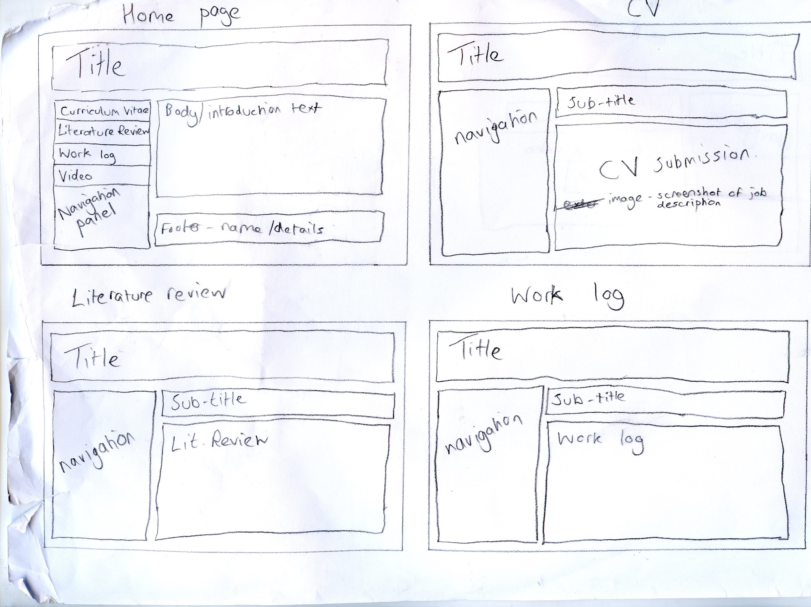
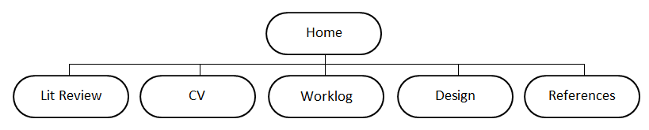

WEBF1 E-Portfolio - UP696811
Designing the Site
This page shows the stages I went through designing this site, the design decisions I made, and also a video tutorial on using a CSS Level 3 property.
Initial Design
Before actually starting work on the HTML, I made a rough design of how each page would look on paper (shown below). I made some design changes for the finished site, the major one being that the navigation panel is now fixed in one place, and in line with the header on each page. I also decided not to have a footer on the website, as my contact details are included on the Home page and don't need to be anywhere else.
In addition to this, I made a navigation diagram to show the structure of the site. As I only have six pages on the site, this diagram is very basic.
Accessibility
To create a website that could be used by anyone, I had to consider accessibility. Firstly, I have considered people with auditory disabilities by including a transcript for my video below. Secondly, any images I have included have an alternative text for those with visual disabilities (the image description can be read by a screen reader). Finally, the colours I chose for the site (blue, grey, black and white) are high contrast colours and are suitable for those that are colour-blind.
CSS Level 3
I used two CSS3 features when creating this site - rounded borders (which can be seen on the 'HTML validator' link at the bottom of every page) and text shadows (these are used on every header on each page). Below I have included a video tutorial on how to add a shadow to text using CSS3 and HTML5.
Video transcript
[0:00] This is a quick tutorial video on how to add a shadow to any text in HTML5 using CSS Level 3.
[0:07] As you can see here, I have the start of an HTML5 file. The only real important line here is the h1, where I have written "Text Shadow".
[0:18] This is what it looks like without the actual shadow, and this is what it looks like when linked to the CSS file here.
[0:26] I have already set the font-family and the font-size, you can add any other properties in there, it doesn't matter.
[0:36] The actual property for adding a text shadow is just "text-shadow" with a hyphen.
[0:41] Now you have to type in four values. The first value sets the horizontal width of the shadow, this will be how far away a shaded letter is from its original letter.
[0:54] The second value is the same, but vertically, so far a shaded letter will be vertically from its original character.
[1:05] The third value is the blur distance, which usually will be the same as the horizontal width and the vertical width.
[1:17] Finally, the colour of the shadow - I am going to go with a solid grey colour.
[1:23] Now you can see what this looks like on my HTML page, and as you can see it has added a shadow to the back of the text.
[1:31] That's all you have to do.